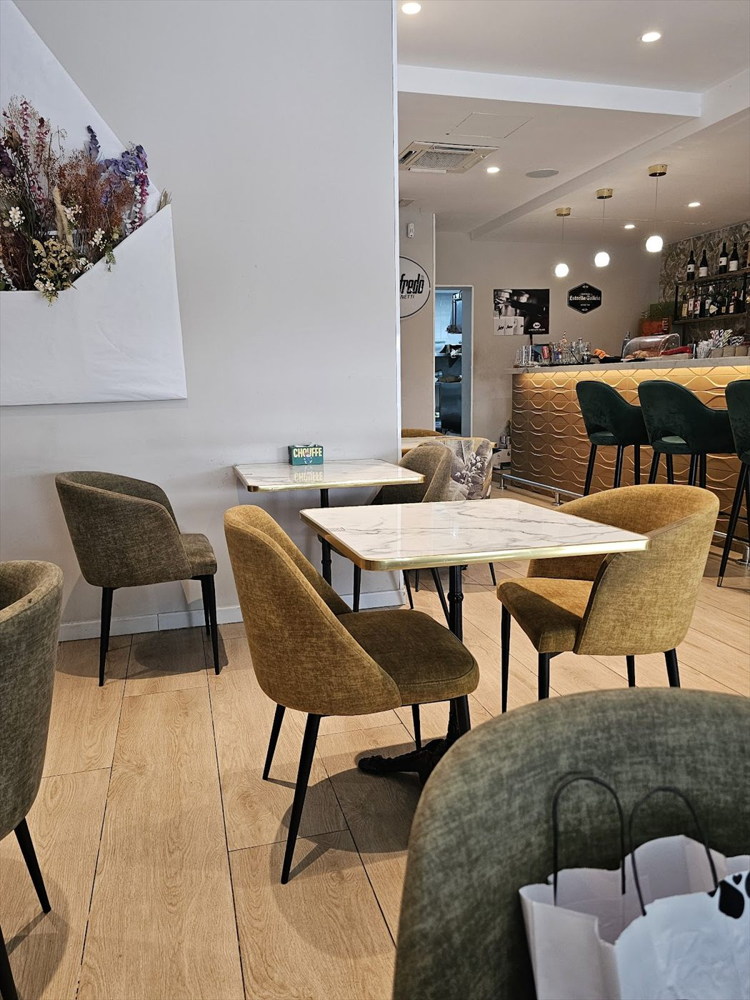
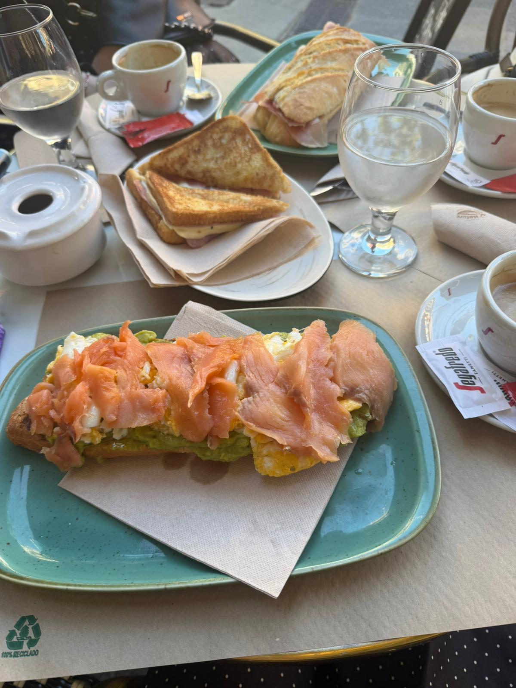
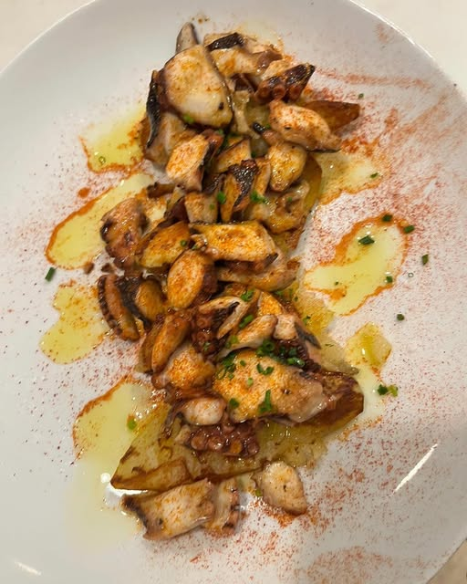
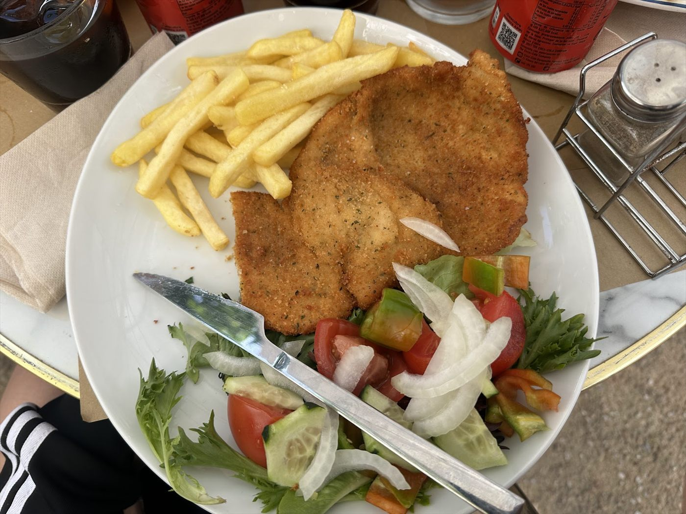
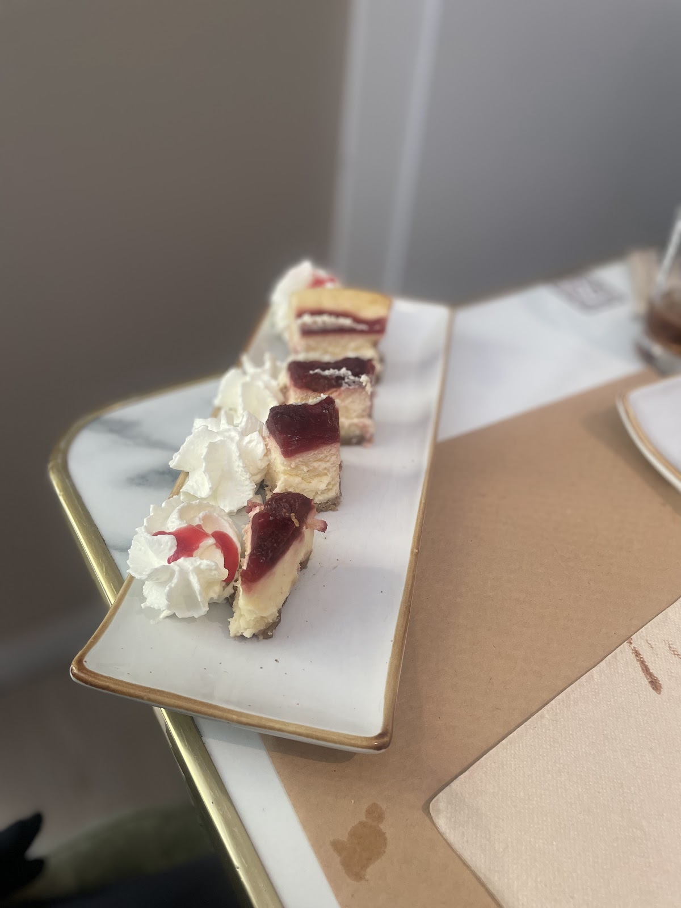

Todos los días
8:30 — 23:00
Desliza
Google
4,6 ★ · 546 opiniones
La casa
Hay lugares que se recuerdan por cómo huelen. Café recién hecho por la mañana, pan tostado, el mar a un paso y, cuando cae la tarde, un mojito de fresa en la terraza. Eso es Aroma.
La carta, como un perfume
Tres notas.
Un mismo aroma.
- Café Segafredo recién hecho
- Cappuccino con dibujo de leche
- Tostadas y pan con tomate y jamón
- Croissants y bocadillos
- Chocolate
- Pulpo a la gallega
- Calamares y mejillones
- Sándwiches bien cargados
- Escalope con patatas y ensalada
- Carne y pasta
- Carrot cake y mousse de chocolate
- Brownie con nata y copas de helado
- Mojito de fresa
- Cerveza Chouffe y Estrella Galicia 1906
- Vinos y cócteles
Carta del día y precios en barra o por teléfono.

Interior
Terciopelo,
mármol y luz.
Sillas de terciopelo mostaza y verde, mesas de mármol, flores frescas y una barra ondulada que invita a quedarse un rato más. Limpio, tranquilo y cuidado hasta el último detalle.


Terraza
Al sol,
a un paso del mar.
Mesas al aire libre en pleno Passeig de Dintre, la calle de dentro de Blanes. Para el primer café, para el vermut o para alargar la tarde.
De la cocina
Hecho aquí,
servido con calma.




4,6 ★ · 546 opiniones en Google
«Que lugar tan acogedor, la comida espectacular, deliciosa, riquísima. La atención de las chicas ni hablar, súper atentas y amables […] 100/10»Lina Marcela · Google
«Excelente servicio! Excelente café! La pastelería estaba muy buena […] Todo se veía fresco, el ambiente y el local estaban súper limpios y ordenados.»Diannis · Google
«Muy lindo sitio con mesas al aire libre. […] Excelente calidad-precio. Muy buena y amable la atención!»Daiana · Google
«Un lugar tranquilo, la comida deliciosa el pulpo y calamar recomendado.»Reseña en Google
«Los camareros muy atentos y buen café.»Reseña en Google
«También pedimos un sandwich de lomo/bacon/queso y era super grande.»Reseña en Google
Visítanos
Passeig de Dintre, 4
Blanes
- Horario
- Todos los días
8:30 — 23:00 - Reservas
- 972 74 66 43
- Síguenos
- @aroma_cafe_blanes